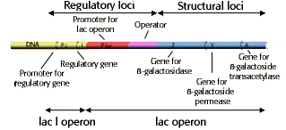

Molecular Genetics of Prokaryotes Problem Set
Problem 1: Components of the lac operon of E. coli
Tutorial to help answer the questionWhich of the following is not part of the lac operon of E. coli?
A. genes for inducible enzymes of lactose metabolism B. genes for the repressor, a regulatory protein C. gene for RNA polymerase D. a promoter, the RNA polymerase binding site E. the operator, the repressor binding site
Tutorial
The Operon Model
|
An operon is a coordinately regulated unit of transcription in bacteria. The operon model was proposed by Jacob, Monod, and Wollman based on their genetic and biochemical studies on lactose-requiring mutations of E. coli. An operon is a unit of the bacterial chromosome consisting of the following components:
 |
1. A regulatory geneThe regulatory gene codes for a regulatory protein. The lac repressor, encoded by the lac I gene, is the regulatory protein of the lac operon. |
2. An operatorThe operator is the region of DNA of the operon that is the binding site for the regulatory protein. |
3. A promoterThe promoter is the DNA sequence of the operon recognized by DNA-dependent RNA polymerase. The initiation site for RNA synthesis is immediately downstream of the promoter. The gene for DNA-dependent RNA polymerase is not part of the operon, since the RNA polymerase enzyme transcribes all bacterial operons. |
4. Structural genesThe operon encodes one or more genes for inducible enzymes. The lac operon encodes enzymes necessary for lactose metabolism, including ß-galactosidase, ß-galactoside permease, and ß-galactoside transacetylase. |


University of Arizona
Thursday, October 17, 1996
Contact the Development Team
http://www.biology.arizona.edu
All contents copyright © 1998-99. All rights reserved.